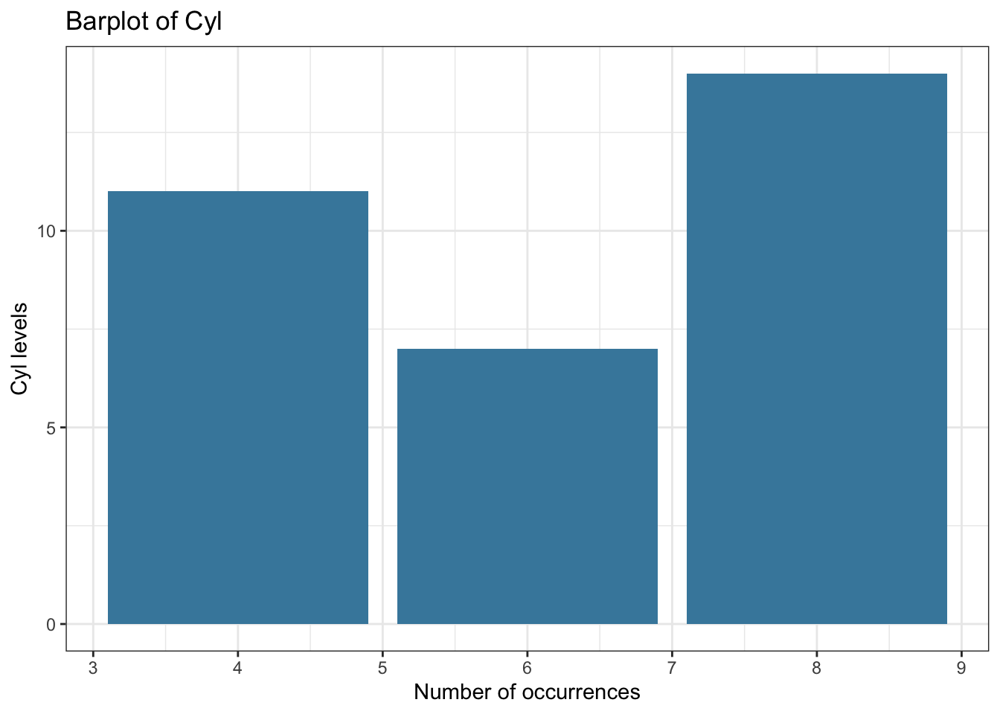
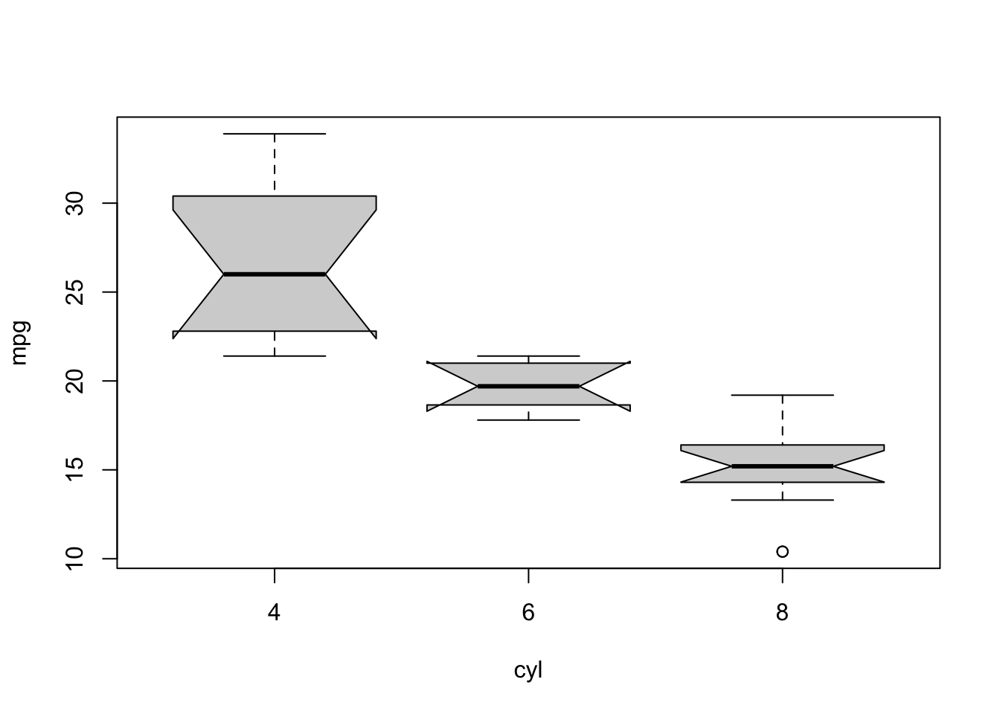

Before knowing how to plot something, you should know what you want to plot:
Scenario
Which plot
R command
Numeric
Histogram or boxplot
hist() andboxplot
Numeric with numeric
Scatterplot
plot
Numeric with categorical
Boxplot
boxplot(numeric~categorical)
Categorical with categorical
mosaicplot or grouped barplot
mosaicplot(table(categorical, categorical)) or barplot(data, beside=TRUE)
Here is a website with a decision tree about when to choose which plot https://www.data-to-viz.com/
Once you know what you want to plot, there are lot of websites that will show you the respective R code. One important consideration, however: there are at least two popular ways of doing R graphis:
base R: The graphics package is automatically shipped with the R language and is the default plotting package in R. It prodces basic scientific plots (no unnecessary information)
ggplot2 is a newer plotting package where the default plots are more visually appealling
for which the code looks completely different. You should probably get to know both types, but I would recommend to start with base R. I’m just saying this so that you are not confused, because a lot of the examples will also show you ggplot code. Here some useful links:
A few simple graphs in base R https://www.statmethods.net/graphs/index.html
R code for the most common graphics (with a ggplot2 tendecy) https://www.r-graph-gallery.com/index.html
R coder graph tutorials https://r-coder.com/r-graphs/
3.1.1.1 Numerical variable - Histogram and Boxplot
The histogram plots the frequency of the values of a numerical variable with bins (otherwise each unique value will appear only once, the range will be cut in n elements). The number of bins is automatically inferred by the function but can be also changed by the user
The boxplot plots the distribution of a numerical variable based on summary statistics (the quantiles). The boxplot is particular useful for comparing/contrasting a numerical with a categorical variable (see below)
par(mfrow =c(1,2)) # number of plots, one row, two columnshist(iris$Sepal.Length, main ="Histogram", # titlexlab ="Sepal.Length", ylab ="Frequency",las =1) # rotation of x and y values (las = 1, all of them should be horizontal)boxplot(iris$Sepal.Length, main ="Boxplot", # titleylab ="Values")
barplot(counts, main ="Barplot of Cyl",ylab ="Number of occurrences",xlab ="Cyl levels",col ="#4488AA")
ggplot(mtcars, aes(x = cyl)) +geom_bar(fill ="#4488AA") +ggtitle("Barplot of Cyl") +xlab("Number of occurrences") +ylab("Cyl levels") +theme_bw()

3.1.2 Two variables
The general idea of plotting is to look for correlations / associations between variables, i.e. is there a non-random pattern between the two variables.
3.1.2.1 Numerical vs numerical variable - Scatterplot
# Scatterplotpar(mfrow =c(1,2))plot(airquality$Solar.R, airquality$Ozone)# plot(Ozone ~ Solar.R, data = airquality) #the same# different symbol for each monthplot(Ozone ~ Solar.R, data = airquality, pch = Month)
We can also add other objects such as lines to our existing plot:
par(mfrow =c(1,1))plot(Ozone ~ Solar.R, data = airquality)abline(h =50)
3.1.2.2 Categorical vs numerical variable - Boxplot
Often we have a numerical variable (e.g. weight/fitness) and a categorical vairable that tells us the group of the observation (e.g. control or treatment). To compare visually now the distributions of the numerical variable between the levels of the grouping variable, we can use a boxplot
boxplot(mpg ~ cyl, mtcars, notch=TRUE) # formula notation## Warning in (function (z, notch = FALSE, width = NULL, varwidth = FALSE, : some## notches went outside hinges ('box'): maybe set notch=FALSE

# boxplot(x = mtcars$cyl, y = mtcars$mpg) # the same
ggplot(mtcars, aes(y = mpg, group = cyl)) +geom_boxplot(notch=TRUE) +theme_bw()## Notch went outside hinges## ℹ Do you want `notch = FALSE`?## Notch went outside hinges## ℹ Do you want `notch = FALSE`?